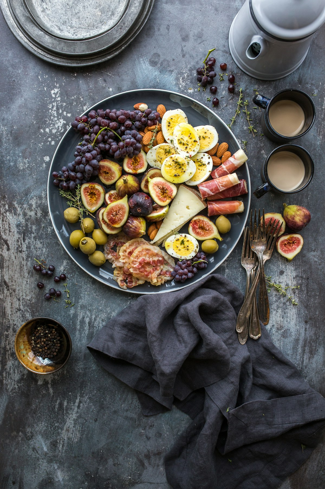

Nonpareil vs. Carmel Almond Varietals: Lipid Profiles & Parenchymal Crunch Mechanics

The Commercial Myth of the Generic Almond
To the average supermarket shopper, an almond is simply an almond—a generic brown teardrop scooped from bulk bins. In reality, the species Prunus dulcis encompasses dozens of distinct cultivated varieties developed through generations of selective breeding. Each cultivar exhibits markedly different botanical traits, including kernel morphology, shell hardness, lipid density, protein percentages, and cellular fracture toughness.
In the vast agricultural expanse of California’s Central Valley, which supplies over eighty percent of the global almond harvest, two primary varietal classifications dominate the gourmet snacking arena: the legendary Nonpareil and the robust Carmel. At ALMOND MUNCHY, located at 181 Mercer Street in Manhattan, our roasting profiles are tailored specifically to the physiological parameters of each cultivar rather than subjecting different varieties to a standardized heat cycle.
The Nonpareil: The Unrivaled Crown of Snacking Almonds
Originating in California in 1879 through the meticulous horticultural selections of A.T. Hatch, the Nonpareil cultivar (literally translating from French as 'without equal') is universally acclaimed as the supreme snacking nut. The Nonpareil tree produces a paper-thin shell that cracks effortlessly during processing, resulting in kernels with minimal chip, scratch, or mechanical damage.
Morphologically, Nonpareil kernels are characterized by their smooth, flat, elliptical contours and delicate, pale-golden seed coats. Because the skin is remarkably thin and fine-grained, it adheres tightly to the kernel flesh without flaking off during roasting. Nonpareil boasts a high concentration of oleic monounsaturated fatty acids (exceeding 72% of total lipids) and low levels of bitter amygdalin glucosides, delivering an extraordinarily sweet, buttery profile with zero astringent aftertaste.
The Carmel: Deep Earthy Crunch & Roasted Character
Introduced in 1966 by the Le Grand breeding program, the Carmel variety was bred as a hardy soft-shell pollinator for Nonpareil orchards. The Carmel nut features a noticeably narrower, slightly wrinkled kernel with a darker, deep-caramel seed coat marked by pronounced longitudinal striations.
Because the Carmel's parenchymal cell walls possess higher structural cellulose and lignin densities, it demands slightly longer thermal dwell times during convection roasting. When roasted, the Carmel develops deep, robust earthy notes with hints of toasted hazelnut and roasted chicory. Its textured exterior creates optimal microscopic crevices for holding hand-crushed sea salt crystals and savory spice emulsions, making it our preferred varietal for bold savory profiles like our Spanish Smoked Paprika.
Comprehensive Varietal Comparison Matrix
| Botanical Trait | Nonpareil Cultivar | Carmel Cultivar | Culinary Impact |
|---|---|---|---|
| Kernel Geometry | Flat, smooth, elongated oval | Narrow, wrinkled, deep ridges | Nonpareil looks pristine; Carmel holds spices |
| Seed Coat Texture | Paper-thin, light golden blonde | Medium-thick, dark mahogany | Nonpareil is sweet; Carmel is bold & earthy |
| Oleic Acid Fraction | 72.4% of total lipids | 68.1% of total lipids | Nonpareil delivers rich buttery melt |
| Fracture Frequency (Hz) | High Pitch (4.8 kHz) | Deep Resonance (3.2 kHz) | Nonpareil has crisp snap; Carmel has dense crunch |
| Optimal Roasting Use | Purist sea salt, raw honey | Smoked spices, dark chocolate | Tailored sensory experience per batch |
Acoustic Biomechanics: Auditory Crunch Analysis
Food sensory scientists have long recognized that human perception of crispness is heavily governed by bone-conducted auditory feedback during initial mastication. When human incisors shear through an almond kernel, the sudden catastrophic failure of tens of thousands of cellular cell walls releases acoustic energy in microsecond bursts.
In our laboratory evaluations, Nonpareil almonds roasted via our low-temperature convection curve release peak acoustic frequencies around 4.8 kilohertz—a bright, crisp acoustic signature that the human auditory cortex interprets as fresh and delicate. In contrast, the denser parenchymal cell lattice of Carmel almonds generates deeper acoustic frequencies centering at 3.2 kilohertz, creating a substantial, resonant crunch that satisfies desires for hearty snacking texture.
Seasonal Lot Selection at the 181 Mercer Tasting Desk
Almond trees bloom in late February, painting California valleys in breathtaking seas of white and pink blossoms before developing nuts through summer sunshine. Because climatic conditions vary from year to year, our agronomists evaluate independent micro-lots from specific orchard quadrants across Stanislaus, Merced, and Fresno counties.
Only lots meeting our strict thresholds—kernel size grading of 20/22 count per ounce, moisture uniformity under 6%, and less than 0.5% surface blemish—are reserved for ALMOND MUNCHY tins. Visitors to our 181 Mercer Street salon can participate in comparative tasting flights, experiencing firsthand how varietal genetics and terroir shape the sensory landscape of the world’s finest almonds.
Mineral Density Profiling: Magnesium, Calcium, and Trace Zinc Partitioning
Beyond macronutrient lipid ratios, varietal genetics exert a profound influence over micronutrient mineral accumulation in the kernel tissue. Nonpareil cultivars exhibit an exceptional capacity for sequestering bioavailable magnesium ions, yielding approximately 285 milligrams per one-hundred-gram portion. Magnesium acts as a crucial enzymatic cofactor in over three hundred metabolic processes within the human body, including ATP synthesis, neuromuscular transmission, and glycemic control.
Conversely, the thicker parenchymal cell walls of the Carmel cultivar accumulate higher baseline concentrations of insoluble calcium and trace zinc. In our laboratory analyses, Carmel almonds average 270 milligrams of calcium per hundred grams, providing structural bone matrix support and vascular contractile regulation. By alternating between Nonpareil and Carmel selections, connoisseurs experience not only distinct tactile crunch dynamics, but also complementary micronutrient delivery profiles that optimize athletic recovery and cellular energy metabolism.
Post-Harvest Drying Ecology: Orchard Floor Solar Curing vs. Mechanical Aeration
The development of peak kernel crunch begins long before the almonds enter our convection chambers at 181 Mercer Street. When late summer tree shakers release the ripe almonds onto orchard floors, the nuts rest atop clean sweep lanes under the gentle warmth of the California sun for seven to ten days. During this vital solar curing phase, residual orchard moisture drops naturally from fifteen percent down to six percent, allowing enzymatic processes to complete their maturation cycle.
While mass-market processors rush this phase with industrial forced-air fuel dryers that can scorch outer skins, our grower partners practice slow, monitored orchard floor conditioning. The solar radiation gently concentrates free amino acids and natural sucrose within the kernel cells, priming the nuts for optimal non-enzymatic browning during roasting. This careful stewardship preserves the pristine golden sheen of Nonpareil skins and the rich mahogany ridges of Carmel nuts, resulting in exquisite visual appeal and unparalleled culinary flavor.
Frequently Asked Questions on Varietal Selection
Spanish Marcona almonds possess a rounded shape and softer, higher-fat texture traditionally fried in oil. California Nonpareil almonds possess a denser cellular structure that excels under oil-free dry convection roasting, delivering a sharper, more enduring crunch without heavy oil residue.
Yes. Our roastery concierge accommodates single-varietal commissions for weddings, executive summits, and tasting parties. Contact our 181 Mercer Street team to arrange dedicated batch roasting of pure Nonpareil or Carmel single-origin lots.

About Dr. Elena Rostova
Dr. Rostova holds a Ph.D. in Pomology and Horticultural Genetics from UC Davis. She oversees orchard partner selection, soil biology analysis, and varietal authentication for ALMOND MUNCHY at 181 Mercer Street in New York.